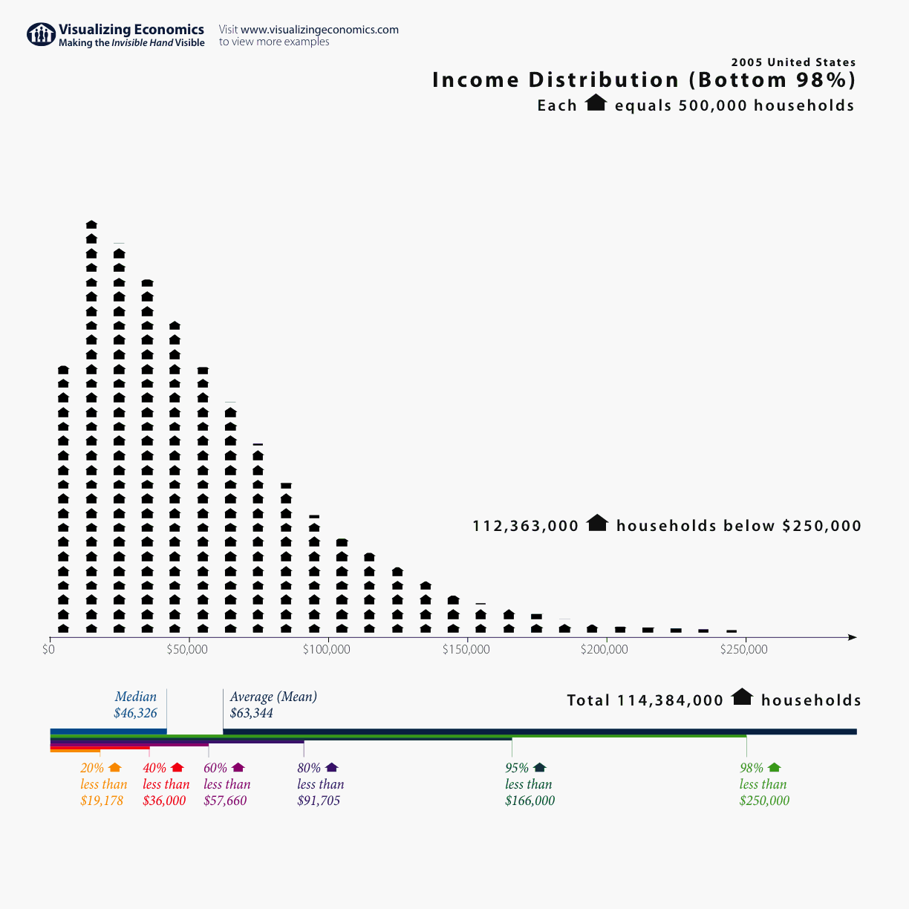
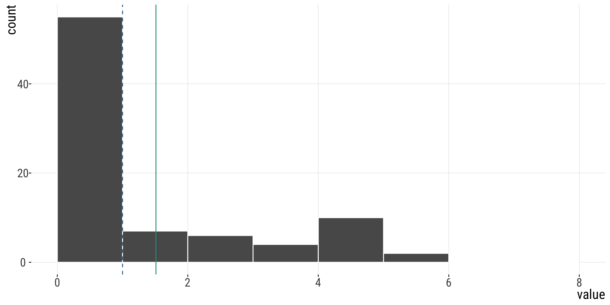
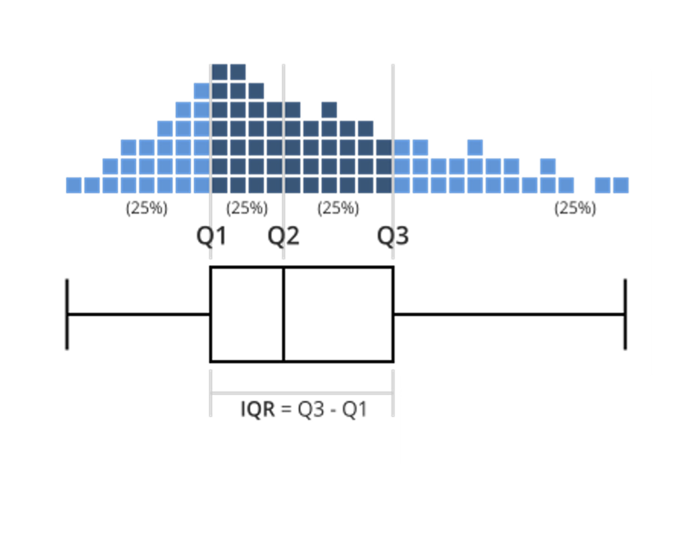
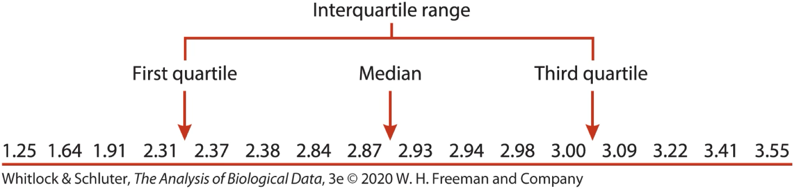

| lifetimeRS | freq |
|---|---|
| 0 | 38 |
| 1 | 17 |
| 2 | 7 |
| 3 | 6 |
| 4 | 4 |
| 5 | 10 |
| 6 | 2 |
| Lifetime reproductive success of male sparrows. | |
A frequency table. Data from Jensen et al. 2004. Journal of Animal Ecology 73: 599-611.
2.1.Descriptive statistics
September 9, 2026
mean
median
mode
mean x median
All of these are numerical summaries we can use for numerical variables. (mode can also be used for categorical ones)
2005 U.S. Census. The plot shows the income per household distribution for the bottom 98% of the population. Median = \(\sim46\)k; Mean: \(\sim63\)k; Mode: [\(5,000-9,9999\)]. Why?

From: https://www.visualizingeconomics.com/blog/2006/11/05/2005-us-income-distribution
For measures like income, medians are generally preferable to means.
Why?
Populations are right-skewed (there are few very rich people), and we care more about the typical person than the mean, which is influenced by the skew.
How many variables are present here?
Frequency tables show the number of times, \(n_{i}\) a value, \(Y_{i}\), is observed in a sample of size \(n_{total}\)
We calculate the mean from a frequency table by summing the product of \(n_{i}\) and \(Y_{i}\) all values and diving by \(n_{total}\).
| lifetimeRS | freq |
|---|---|
| 0 | 38 |
| 1 | 17 |
| 2 | 7 |
| 3 | 6 |
| 4 | 4 |
| 5 | 10 |
| 6 | 2 |
| Lifetime reproductive success of male sparrows. | |
A frequency table. Data from Jensen et al. 2004. Journal of Animal Ecology 73: 599-611.
[1] 84| lifetimeRS | freq | RSxfreq |
|---|---|---|
| 0 | 38 | 0 |
| 1 | 17 | 17 |
| 2 | 7 | 14 |
| 3 | 6 | 18 |
| 4 | 4 | 16 |
| 5 | 10 | 50 |
| 6 | 2 | 12 |
| Lifetime reproductive success of male sparrows. | ||
| lifetimeRS | freq | RSxfreq |
|---|---|---|
| 0 | 38 | 0 |
| 1 | 17 | 17 |
| 2 | 7 | 14 |
| 3 | 6 | 18 |
| 4 | 4 | 16 |
| 5 | 10 | 50 |
| 6 | 2 | 12 |
| Lifetime reproductive success of male sparrows. | ||
[1] 0 0 0 0 0 0 0 0 0 0 0 0 0 0 0 0 0 0 0 0 0 0 0 0 0 0 0 0 0 0 0 0 0 0 0 0 0 0
[39] 1 1 1 1 1 1 1 1 1 1 1 1 1 1 1 1 1 2 2 2 2 2 2 2 3 3 3 3 3 3 4 4 4 4 5 5 5 5
[77] 5 5 5 5 5 5 6 6We saw that mean (green, full line below) > median (blue dashed line) in this example. Let’s plot the distribution to confirm our intuition:

Range [max value - min value]
Quartiles, interquartile range [75th percentile - 25th percentile]
Variance [ estimate = \(s^2\) =\(\frac{\Sigma(x_i - \bar{x})^2}{n-1}\), param = \(\sigma ^2\) = \(\frac{\Sigma(x_i - \mu)^2}{n}\) ]
Standard deviation [ estimate = \(s\) =\(\sqrt{s^2}\), param = \(\sigma\) = \(\sqrt{\sigma^2}\) ]
Coefficient of variation [ estimate = CV = \(\frac{s}{\bar{Y}}\), param = \(\frac{\sigma}{\mu}\) ]
Variability of a population should not be ignored as simply noise about the mean, but is biologically important in its own right.
Variation has a true value from a population that we estimate from a sample.
The difference between the maximum and minimum observed values in a sample
The range of a sample corresponds to the size of the narrowest interval containing all the data. Operationally, it’s calculated as the difference between the maximum and minimum
Max and Min in this dataset at time 20:
Min. 1st Qu. Median Mean 3rd Qu. Max.
76.0 161.0 204.0 209.7 259.0 361.0 [1] 76 361[1] 285[1] 76 361What happens to the range as sample size increases?
What happens to the range if there are rare outliers?
Not a good measure of spread. Let’s look for a better one.
Salary range in a company will give a very good sense of the disparities between the ones in each end, but not a good sense of what the “average” employee earns
What can you do then?
q-quantiles are cut points dividing the range of a probability distribution into q intervals with (approx) equal probabilities.
2 quantiles: median
4 quantiles: quartiles (1st quartile, median, 3rd Q)
The difference between the 75th and 25th percentiles of the data. A.k.a., the “middle 50%” of the data.

Imagine sorting your data.

Example: Running speeds (cm/s) of Tidarren spiders before voluntary amputation of pedipalp
\(n=16\)
1st quartile: \(j=0.25n=4\)
3rd quartile: \(j=0.75n=12\)
If \(j\) is integer, \(\frac{Y_{j}+Y_{j+1}}{2}\)
\(\frac{Y_{4}+Y_{5}}{2}=\frac{2.31+2.37}{2}=2.34\)
\(\frac{Y_{12}+Y_{13}}{2}=\frac{3+3.09}{2}=3.045\)
summary() gives quartiles and max/min
Min. 1st Qu. Median Mean 3rd Qu. Max.
76.0 161.0 204.0 209.7 259.0 361.0 The “long” route:
The shortcut
Variance, Standard Deviation, & Coefficient of Variation all communicate how far individual observations are expected to deviate from the mean.
Variance is a measure of dispersion of data points in a sample (or population) around the mean of the sample (or population). It is the expected squared difference between an observations and the mean.
Parameter
\[\sigma^2=\frac{\sum_{i=1}^{N}(Y_{i}-\mu)^2}{N}\] \(N\): number of individuals in population
\(\mu\): population mean
Estimate
\[s^2=\frac{\sum_{i=1}^{n}(Y_{i}-\bar{Y})^2}{n-1}\] \(n\): number of individuals in sample
\(\bar{Y}\): sample mean
\[s^2=\left(\frac{n}{n-1}\right)\left(\frac{\sum^{n}_{i=1}{Y^2_i}}{n}-\bar{Y}^2\right)\]
Lifespan of 12 forager bees (in hours).
2.3 2.3 3.9 4.0 7.1 9.5 9.6 10.8 12.8 13.6 14.6 18.2 18.2 19.0 20.9 24.3 25.8 25.9 26.5 27.1 30.0 33.3 34.8 34.8 35.7 36.9 41.3 44.2 54.2 55.8 65.8 71.1 84.7
\[\bar{Y} = \frac{\sum{Y_i}}{n} = \frac{919}{33}= 27.848\text{ hours}\]
# A tibble: 33 × 3
hours `Y-meanY` `(Y-meanY)^2`
<dbl> <dbl> <dbl>
1 2.3 -25.5 653.
2 2.3 -25.5 653.
3 3.9 -23.9 574.
4 4 -23.8 569.
5 7.1 -20.7 430.
6 9.5 -18.3 337.
7 9.6 -18.2 333.
8 10.8 -17.0 291.
9 12.8 -15.0 226.
10 13.6 -14.2 203.
# ℹ 23 more rows[1] 13520.96So
\[s^2 = \frac{13520.96}{33-1}=422.53\text{ hours}^2\]
Note: the unit here is hours squared. Also, note that we don’t divide by \(n\) but by \(n-1\).
Parameter
\[\sigma=\sqrt{\frac{\sum_{i=1}^{N}(Y_{i}-\mu)^2}{N}}=\sqrt{\sigma^2}\] \(N\): number of individuals in population
\(\mu\): population mean
Estimate
\[s=\sqrt{\frac{\sum_{i=1}^{n}(Y_{i}-\bar{Y})^2}{n-1}}=\sqrt{s^2}\] \(n\): number of individuals in sample
\(\bar{Y}\): sample mean
Using the previous example, with forager bees.
\[s^2 = \frac{13520.96}{33-1}=422.53\text{ hours}^2\] \[s = \sqrt{422.53}=20.555\] ## In R
Variance
Standard deviation
The variance and standard deviation increase with the mean.
The coefficient of variation allows for fair comparisons of variability between measures on different scales.
\[CV = 100\% \times \frac{s}{\bar{Y}}\]
Range: The difference between the largest and smallest values.
Interquartile Range: The difference between the 25th and 75th percentile.
Variance & Standard Deviation: The difference between observations & the mean.
Coefficient of Variation: A measure of the standard deviation that’s independent of the mean.
Variance and standard deviation convey the same information and are used in many equations.
The coefficient of variation is less directly used in equations, but is ideal for comparing variation between different types of comparisons.
B215